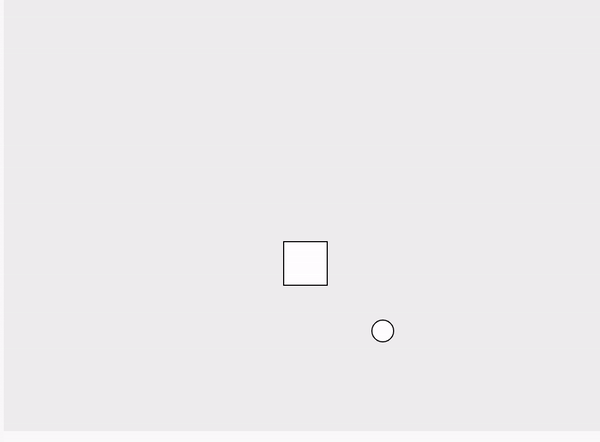
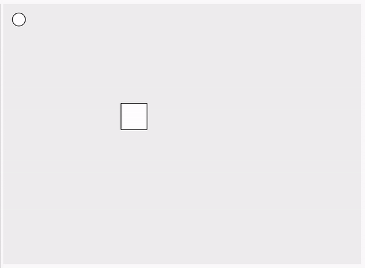

The main issue that I encountered and took me the most time to resolve was getting
the "ball" to bounce off the generated obstacle in my infinite loop sketch. My
first approach to this problem
was checking if the x position of the ball was equivalent to an x position on the
perimeter of the square, and if that was true, then check if the y position of the
ball was also equivalent to a y position on the square's perimeter. I was
essentially checking to if the point where the ball was matched a point on the
perimeter of the square so that I could change the direction the ball was "moving".
This was ultimately insufficient because I could determine if the point existed, but
I couldn't determine where the point was on the square so that I could change the
direction of the ball accordingly (i.e., change the x direction if the ball hit one
of the sides or change the y direction if the ball hit the top or bottom of the square).
My first attempt to resolve this issue was to try and determine if the ball was
bouncing off the top/bottom or side of the obstacle by looking at the value in the
array. I determined that if, for example, the x array contained values surrounding
the current X value, the ball was encountering either the top or the bottom, and I
would adjust the move variable accordingly. This still produced undesired behavior
due to the conditionals I was using, which would occasionally resolve as true in
cases that I wanted them to be false.
My final approach enabled me to solve my issues of determining the coordinates of the
perimeter of the object and also allowed me to evaluate which side of the obstacle
the ball was hitting so I could adjust the "movement" of the ball accordingly. This
approach was to instantiate four arrays, one for each side of the square obstacle,
and store all of the coordinates that made up that side in the respective array. Then,
in the draw function, I was able to evaluate the current XY coodinate of the ball
everytime the draw function was executed and see if the current coordinates existed
in one of the arrays. If it was located in one of them, I would either invert the
X or Y direction. I also made sure to account for the fact that the coordinates of
the ball were located in the center of the shape for evaluating the position with
a 10 pixel differential so that the ball would change direction when its perimeter
made contact with the obstacle.

GIF of my infinite loop code with undesired behavior.

GIF of my infinite loop code with desired behavior where ball cleanly bounces off
the walls and obstacles.